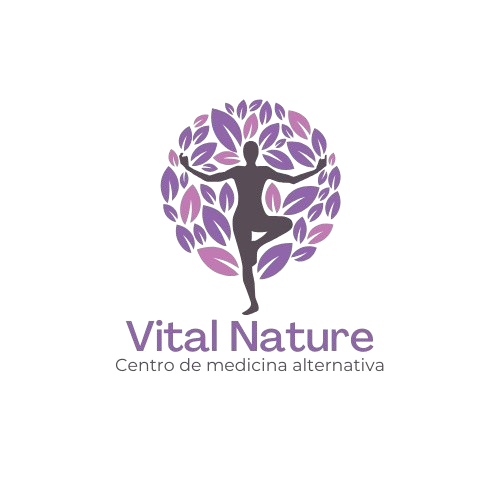
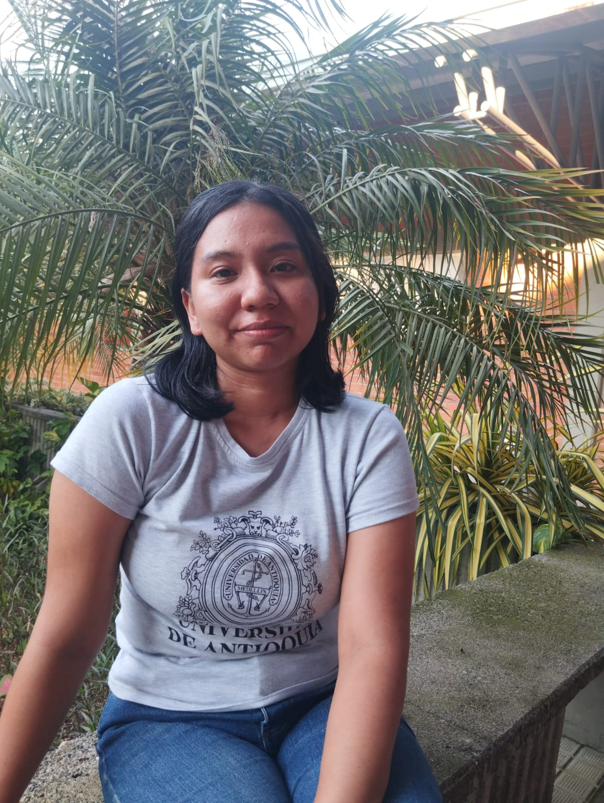
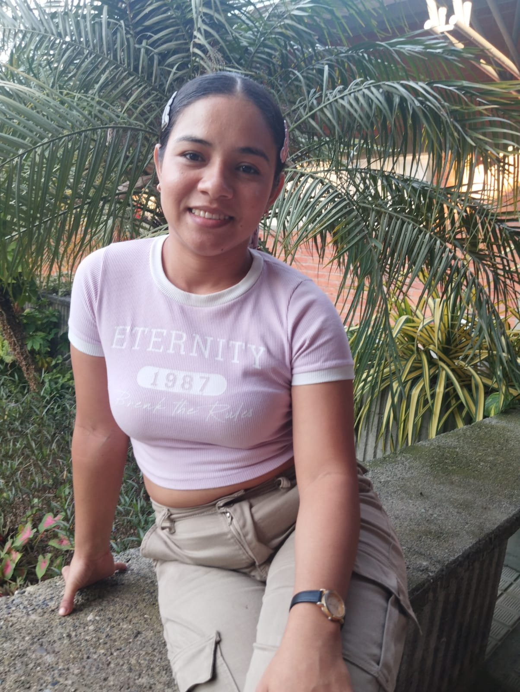

+57 3105103702
Para citas


Aprende sobre nosotras
En un mundo cada vez más acelerado, el bienestar se ha convertido en una necesidad, no en un
lujo. En Vital Nature, creemos que la salud no se limita a tratar síntomas, sino a
comprender las causas profundas que afectan el equilibrio integral del ser humano. Nuestro
enfoque combina acupuntura, terapias naturales y nutrición integral para acompañarte en un
proceso de prevención, sanación y bienestar consciente.
🌸 Un enfoque holístico para una vida en armonía
La medicina natural observa al ser humano como un todo: cuerpo, mente y energía. En Vital
Nature integramos conocimientos ancestrales con prácticas contemporáneas para promover la
autosanación natural del organismo, siempre respetando y complementando los tratamientos de
la medicina tradicional.
Nuestros especialistas utilizan técnicas seguras y personalizadas que potencian la
vitalidad, fortalecen el sistema inmunológico y alivian dolencias físicas y emocionales.
Aquí no se reemplaza la medicina convencional: se trabaja en sinergia con ella para lograr
resultados más completos y sostenibles.
Nuestros servicios
Una técnica milenaria que estimula puntos energéticos del cuerpo para restaurar el flujo vital, aliviar el estrés, reducir el dolor y equilibrar emociones
masajes, aromaterapia, fitoterapia y técnicas de relajación que ayudan a liberar tensiones y a revitalizar el organismo.
planes alimenticios diseñados para nutrir cuerpo y mente, promoviendo hábitos saludables y una relación consciente con los alimentos.
Cada servicio en Vital Nature está diseñado para ayudarte a prevenir enfermedades, fortalecer tu energía vital y mejorar tu bienestar emocional y físico.
Uno de los grandes retos de Vital Nature es educar al público sobre la importancia de las prácticas complementarias. Muchas veces, las terapias naturales se malinterpretan como opuestas a la medicina tradicional, cuando en realidad son aliadas poderosas. A través de nuestros espacios educativos "charlas, blogs y redes sociales" buscamos derribar mitos y fomentar una cultura de prevención y autocuidado consciente, basada en la evidencia y el respeto por todas las formas de medicina.
Creemos que el futuro de la salud está en la integración: unir lo mejor de la medicina tradicional y la natural para ofrecer bienestar auténtico y sostenible. En Vital Nature acompañamos ese cambio, con una visión moderna, empática y centrada en la persona.
Equipo de trabajo

